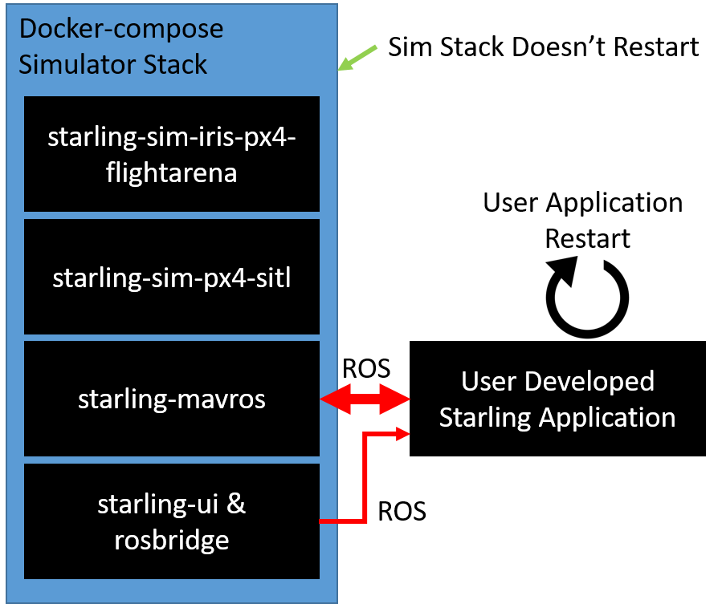

13. Local Testing and Development workflows¶
13.1 More efficent local development and testing¶
13.1.1 Splitting the simulator and the controller¶
So far, you have been running the controller using docker-compose with the --build command which both builds your controller and starts up the entire simulator stack. You may start to notice that this can sometimes take really long - in particular the simulator start up can sometimes be annoyingly inconsistant.
Therefore Starling introduces a new paradigm which allows you to attach and detach a sidecar application container to your simulation.
(This example is from PX4, but the same applies for Ardupilot!)

Essentially we start the simulator stack on its own in one termianl. Then with the instructions from the previous tutorial we can create a standalone application container which we can build, restart and test without needing to restart the entire simulator!
Note: If the drone crashes or the autopilot becomes unresponsive, you will still need to restart your simulator. However this method should reduce the number of simulator restarts required.
13.1.2 Sidecar in practice¶
To run the simulator only, you can use the docker-compose file in 8_containers. Therefore in one terminal, run the following.
docker-compose -f 8_containers/docker-compose.yml up
Then start a new terminal. Note that when you run docker-compose, it will start a new mini Docker network in which it communicates over. We first need to find the name of this network so that we when we run our application, ROS2 can find the simulator.
$ docker network ls
NETWORK ID NAME DRIVER SCOPE
04468b7ccad2 1_old_school_default bridge local
1282aac186af 7_multi_part_default bridge local
472239bc901c 8_containers_default bridge local <---
546d35750dc0 bridge bridge local
681c73eec26a deployment_default bridge local
...
Running the above we identify that 8_containers_default is the name of the network.
Note: In general the network name is the
<parent directory of docker-compose file>_default.
We then build and run our container, remembering to specify our network.
docker build -t my_application:latest fenswood_drone_controller
docker run -it --rm --net=8_containers_default my_application:latest
This will hopefully start your application, and it will hopefully connect to the simulator. Then if you make any changes, you just need to rebuild and rerun your application and it will automatically reconnect via ROS.
13.1.3 Makefiles¶
The final element to be introduced is the Makefile. A Makefile is a simple tool which we like using to streamline the number of commands we have to manually enter. An example makefile can be found in 8_containers/Makefile
MAKEFILE_DIR:=$(shell dirname $(realpath $(firstword $(MAKEFILE_LIST))))
DOCKERFILE:=$(MAKEFILE_DIR)/../fenswood_drone_controller
IMAGE_NAME?=fenswood_drone_controller
NETWORK?=8_containers_default
ENV?=
RUN_ARGS?=
all: build
help:
@echo "all - run build"
@echo "build - build the dockerfile for this project"
@echo "run - builds and runs the dockerfile for this project"
@echo "run_bash - builds and runs the dockerfile putting you into a bash shell"
@echo "help - show this help screen"
build:
docker build -t $(IMAGE_NAME) $(DOCKERFILE)
run: build
docker run -it --rm --net=$(NETWORK) $(ENV) -e USE_SIMULATED_TIME=true $(RUN_ARGS) $(IMAGE_NAME)
run_bash: build
docker run -it --rm --net=$(NETWORK) $(ENV) -e USE_SIMULATED_TIME=true $(RUN_ARGS) $(IMAGE_NAME) bash
.PHONY: all help build run run_bash
Then breaking this down, this Makefile defines 5 commands which can be run: all, help, build, run and run_bash. These can each be run from inside the 8_containers directory using the make <command> command. For example
make # By default just make will run the first command in the file
make run # This will run the `run` command
MAKEFILE_DIR:=$(shell dirname $(realpath $(firstword $(MAKEFILE_LIST))))
DOCKERFILE:=$(MAKEFILE_DIR)/../fenswood_drone_controller
IMAGE_NAME?=fenswood_drone_controller
NETWORK?=8_containers_default
ENV?=
RUN_ARGS?=
These lines define useful variables which are used within the Makefile. These can be changed to whatever suits. The := equality defines variables which cannot be changed. The ?= defines variables which can be changed at run time. For example you could change network at runtime by running:
make run NETWORK=someothernetwork_default
run: build
docker run -it --rm --net=$(NETWORK) $(ENV) -e USE_SIMULATED_TIME=true $(RUN_ARGS) $(IMAGE_NAME)
Singling out the run command, there are a number of features. First after the colon, we specify the build command. This represents a dependency of run on build. Therefore the build command is always run before the run command.
The command is then defined on the second line. This can literally be any bash command. Here we specify the running of the image we build. See how it uses all of the variables we defined at the top of the file.
.PHONY: all help build run run_bash
This final line just tells make that theses are valid makefile commands, and not folders or anything else of the same name.
Then in the context of Starling, instead of manually running the docker build and docker run commands, I like the simplicity of just running make run to rebuild and run my application container.
13.2 Exercises¶
- Try and run your application in sidecar mode. Make a change to your source and try and re-run your controller without restarting the simulator.
- Write a simple Makefile for you to use
- Add an extra command to the makefile called
simulatorwhich runs the command needed to start the simulation stack